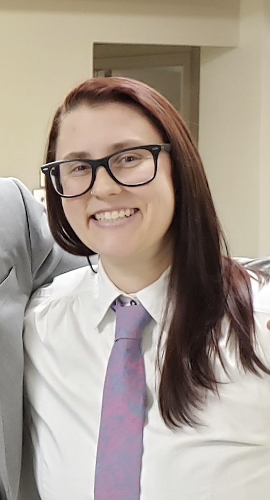

About me!
Hi, I'm Sydney Bugler. I am an aspiring Full-stack developer. My background is in healthcare, but I've recently discovered a passion for tech! In my spare time, I enjoy taking care of my plants, playing guitar, playing video games, and I recently just started learning how to skateboard. I'm excited to be on this journey of learning a new career and I can't wait to put my skills to the test!